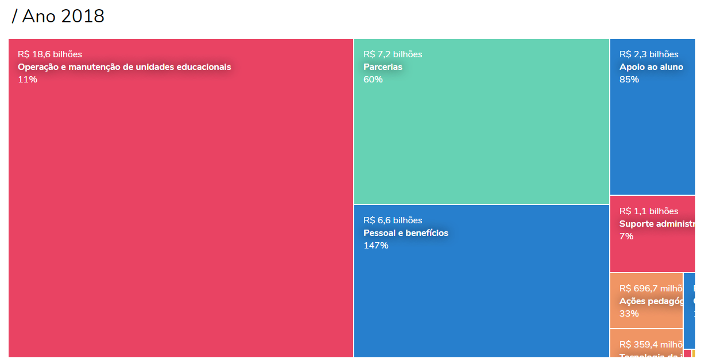
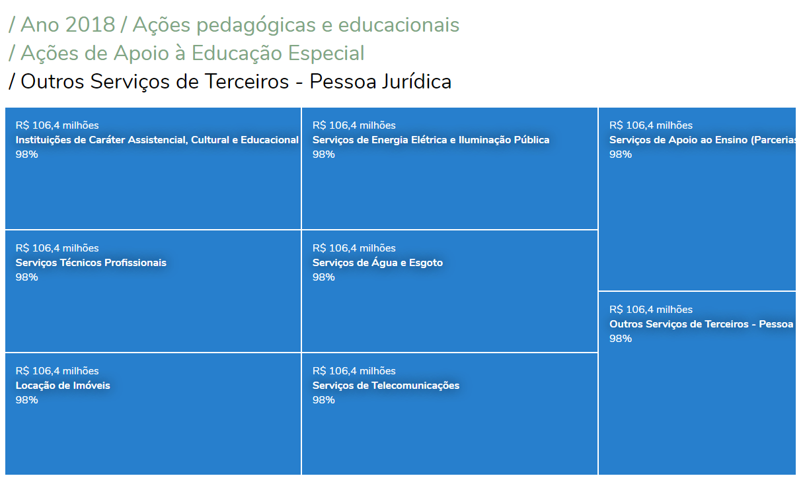
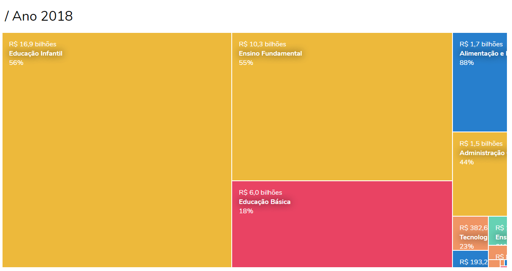
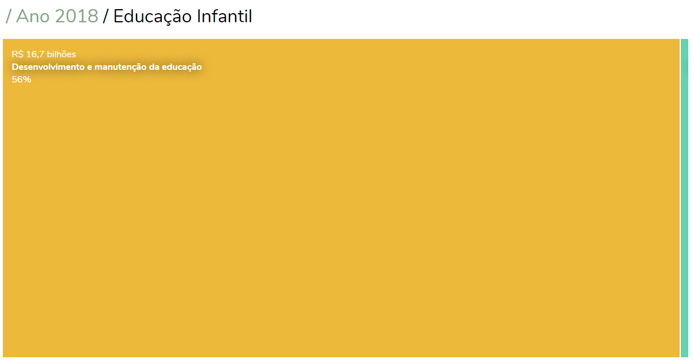
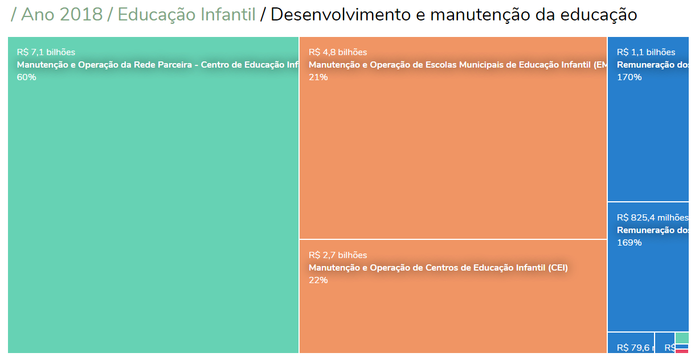
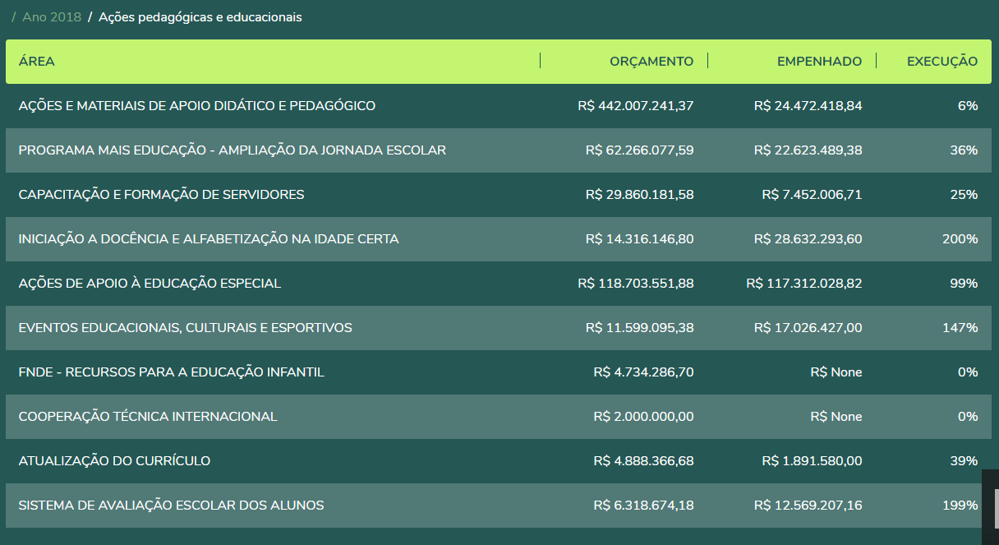

Tutorial ❯ Navegação por Linguagem Amigável
O Recorte para navegação em linguagem amigável apresenta quatro níveis, sendo o primeiro o de Grupos, o segundo de Subgrupos, o terceiro de Elementos de Despesa e o quarto de Subelementos de Despesa (veja a definição dos grupos e subgrupos na seção “Sobre o Mosaico”). Cada vez que se seleciona um retângulo, observa-se a distribuição interna a ele no nível abaixo.
Se for analisado o Mosaico nessa segmentação, pode-se ver já no primeiro nível (Figura 1) como se dá a distribuição dos recursos pelo maior nível de agregação das despesas públicas. A partir deste nível, pode-se escolher a próxima área de interesse e entender como se dão os gastos dentro da área, entrando no nível de Subgrupos.
Figura 1: Orçamento Anual (2018) da Secretaria Municipal de Educação por Grupo
A figura 2 representa a distribuição do orçamento do grupo “Ações pedagógicas e educacionais”. Nota-se que “Ações de apoio à educação especial” é o maior gasto da Secretaria de Educação dentro deste grupo.

Figura 2: Orçamento Anual (2018) do Grupo “Ações pedagógicas e educacionais” por Subgrupo
Outra informação que é possível explorar é a faixa de execução em que cada rubrica se encontra. Pode-se observar que a execução do Programa Projovem Urbano, por exemplo, ficou na faixa de 20% a 40% do valor orçado. Isto pode ser um importante sinalizador de possíveis problemas no processo de execução dessa rubrica.
Na figura 3, avaliam-se os elementos de despesa do Subgrupo escolhido. Como exemplo, apresenta-se a seguir como se gasta em “Ações de Apoio à Educação Especial”.
A maior parte das despesas ocorre com Outros Serviços de Terceiros - Pessoa Jurídica.

Figura 3: Orçamento Anual (2018) do Subgrupo “Ações de Apoio à Educação Especial” por Elemento de Despesa
Na figura 4, analisam-se os subelementos de despesa dentro do elemento “Outros Serviços de Terceiros - Pessoa Jurídica”. Vê-se que o principal gasto foi em “Instituições de Caráter Assistencial, Cultural e Educacional”. Vale ressaltar que o valor que aparece na ferramenta, neste caso, é o total empenhado líquido em cada subelemento.
Observa-se que todos os subelementos apresentados possuem a mesma cor do elemento na tela anterior. Isso se deve ao fato de que, como o subelemento de despesa é uma categoria que só existe para os empenhos de despesa e não para o orçamento, conforme definido pela Lei Orçamentária (exemplo: não se autoriza verba para Material Hospitalar especificamente, mas sim para Materiais de Consumo, em geral), as cores associadas aos subelementos são “herdadas” da cor do elemento de despesa referente.
Figura 4: Orçamento Anual (2018) do Elemento de Despesa “Outros Serviços de Terceiros - Pessoa Jurídica” dentro do Subgrupo “Ações de Apoio à Educação Especial” por Subelemento de Despesa
Tutorial ❯ Navegação por linguagem Técnica
A navegação do Mosaico pela Linguagem Técnica indica como se dá a distribuição de recursos da Secretaria Municipal de Educação segundo a classificação funcional/programática. Aqui não emprega-se nenhuma tipologia alternativa, isto é, as categorias usadas existem exatamente com esta nomenclatura no orçamento municipal..
O primeiro nível disponível é a Subfunção, o segundo são os Programas, e, por último, chega-se ao nível do Projeto/Atividade.
A figura 5, ilustra como é realizada a distribuição de recursos por subfunção no ano de 2018. Analisa-se a subfunção Educação Infantil, que possui 50,5% do orçamento total da SME neste ano.
Figura 5: Orçamento Anual (2018) da SME por Subfunção
A figura 6 indica as dotações dos programas relacionados à Educação Infantil. Nota-se que a maior parte dos recursos é destinada ao programa “Desenvolvimento e manutenção da educação”.
Figura 6: Orçamento Anual (2018) da Subfunção “Educação Infantil por Programa”
Observam-se agora os diversos projetos/atividades relacionados a este Programa, dentro dos gastos de Educação Infantil. Neste caso, selecionando-o (Figura 7) vê-se que “Manutenção e Operação da Rede Parceira - Centro de Educação Infantil (CEI)” é o principal projeto/atividade.
Figura 7: Orçamento Anual (2018) do Programa de Desenvolvimento e Manutenção da Educação dentro da Subfunção “Educação Infantil por Projeto/Atividade”
Tutorial ❯ Gastos por Fonte de Recurso
Uma possibilidade de escolha transversal a todas as visualizações permitida pela ferramenta é observar os gastos filtrados por fonte de recurso. Além do total, sem esse tipo de discriminação, há três recortes possíveis: Tesouro Municipal, Transferências Federais, e Fundeb e outras fontes.
Outras fontes contemplam as Transferências Estaduais e os recursos do Fundo Municipal da Criança e do Adolescente (FUMCAD), destinados à educação.
Um botão na parte superior direita da tela (figura 7) permite filtrar a fonte de recurso desejada, enquanto que, na opção default, o usuário verá os gastos totais, sem filtro.

Figura 8: Seleção do Gasto por Fonte de Recurso
Tutorial ❯ Vizualizações Auxiliares
O Mosaico Orçamentário da SME possui, até o momento, dados desde o ano de 2010 até o ano de 2018. Em qualquer nível de análise e filtro de pesquisa, a ferramenta conta com duas visualizações auxiliares: a série histórica e a tabela de dados..
01. Série histórica
A série histórica mostra a evolução do orçamento ao longo do tempo, desde o ano de 2010 até o ano de 2018, como mostra a figura 10, A seleção realizada no mosaico atualiza este gráfico, isto é, supondo que o usuário selecione, por exemplo, “Apoio ao Aluno” como grupo na navegação amigável, a série histórica apresentará a evolução dos gastos para este grupo específico.
O Gráfico tem duas linhas: o valor orçado atualizado (verba liberada para gasto) e o valor empenhado líquido (valor da despesa efetivamente executada). É possível selecionar entre dados nominais (valores correntes de cada ano) e valores corrigidos pela inflação (ver mais informações na seção 2.3.3.1 - Deflacionamento da metodologia).

Figura 9: Visualização de Série Histórica do Mosaico Orçamentário, Gastos Totais da SME
02. tabela de dados
A tabela de dados contém todas as informações sobre o gráfico principal, ou seja, a proporção de cada rubrica, no nível superior. Assim como a série histórica, a seleção realizada no mosaico atualiza este gráfico para a rubrica específica que foi selecionada, abrindo pelos níveis subsequentes.
No exemplo ilustrado na figura 11, são indicadas as informações sobre os Subgrupos dentro do Grupo “Ações pedagógicas e educacionais”.
A coluna de porcentagem do orçado atualizado aponta para a proporção que cada subgrupo ocupa no total do grupo selecionado, fornecendo os números que retratam a proporção ilustrada no gráfico Mosaico.
Figura 10: Tabela de Dados - Grupo “Ações pedagógicas e educacionais”